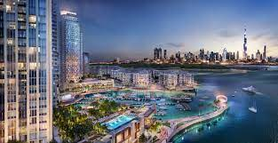

Once a small fishing village in the Arabian Gulf, Dubai shares the spotlight with some of the most cosmopolitan cities in the world.
One of the seven emirates that make up the United Arab Emirates.
The city is home to more than 200 nationalities and offers an unforgettable experience to all visitors.
5 great places to visit in Dubai
Burj Khalifa

The Burj Khalifa is a skyscraper in Dubai, United Arab Emirates. It is an 830m-tall tower. It is known for being the world's tallest building.
At its foot lies Dubai Fountain, with jets and lights choreographed to music.Burj Al Arab

Burj Al Arab is the most luxurious hotel of Dubai having interiors embellished with 24-carat gold.
It is one of the tallest hotels in the world, although 39% of its total height is made up of non-occupiable space.Palm Jumeirah

Palm Jumeirah The tree-shaped Palm Jumeirah artificial island is known for glitzy hotels, posh apartment towers and upmarket global restaurants. Food trucks offering snacks like shawarma dot the Palm Jumeirah Boardwalk, popular for its views of the Dubai coastline and the sail-shaped Burj Al Arab hotel. Beach clubs with spas and infinity pools turn into boisterous nightclubs with live DJs in the evening.
Dubai Miracle Garden

The Dubai Miracle Garden is a flower garden located in the district of Dubailand, Dubai, United Arab Emirates. The garden was launched on Valentine's Day in 2013. It occupies over 72,000 square metres, making it the world's largest natural flower garden, featuring over 50 million flowers and 250 million plants.
Dubai Creek
Dubai Creek has been described as a natural saltwater creek, tidal inlet, and watercourse or waterway in Dubai, United Arab Emirates. It extends about 9 miles inwards and forms a natural port that has traditionally been used for trade and transport.